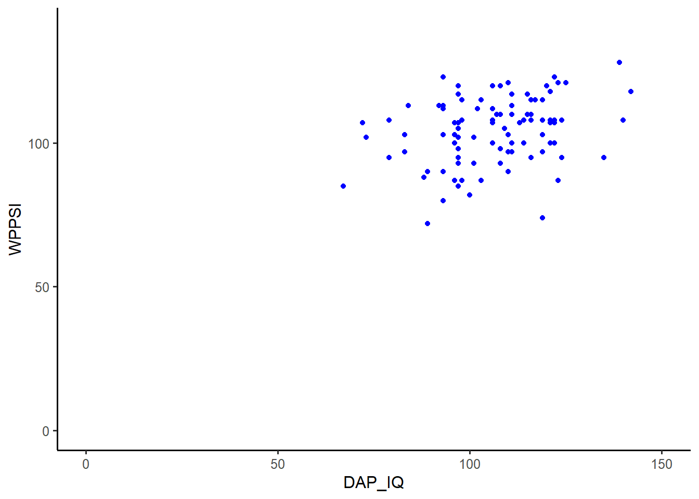
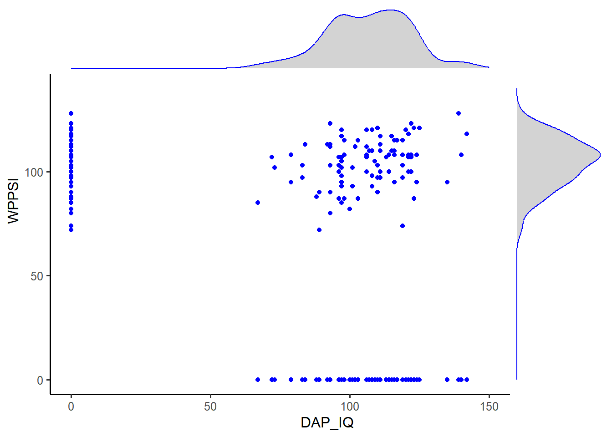
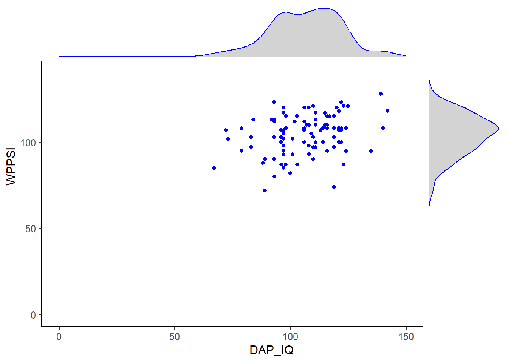
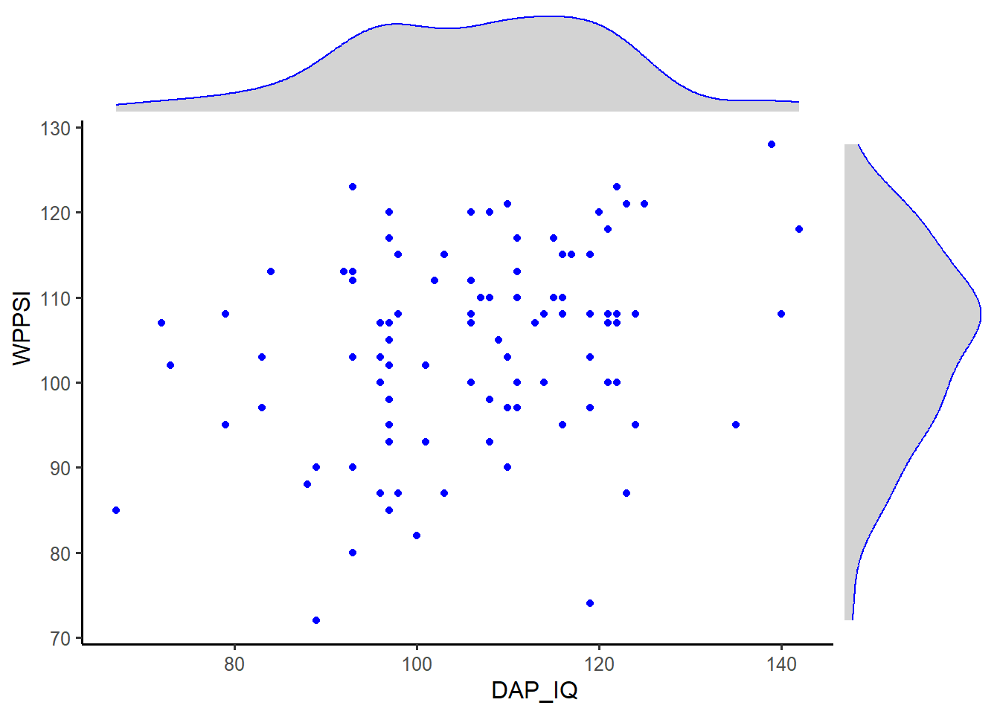
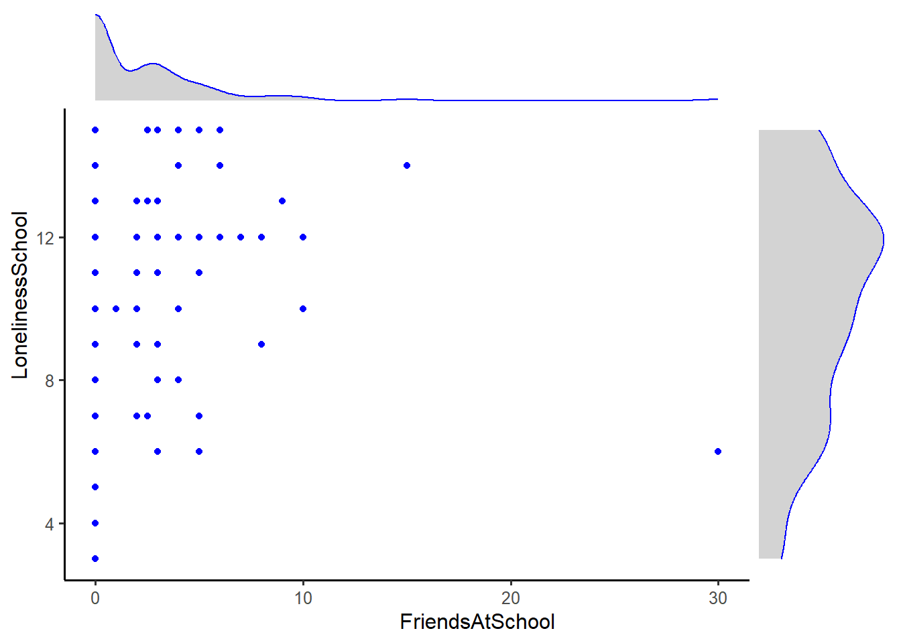
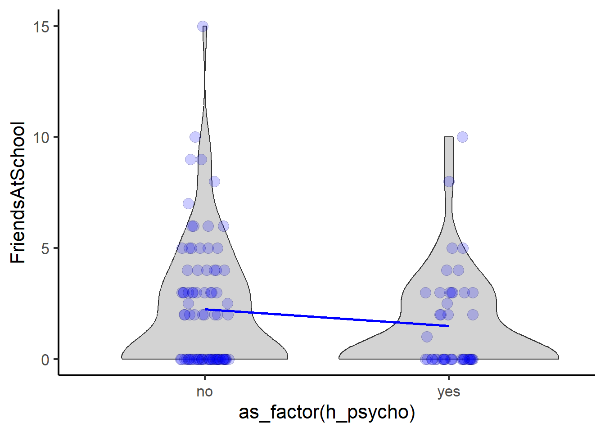
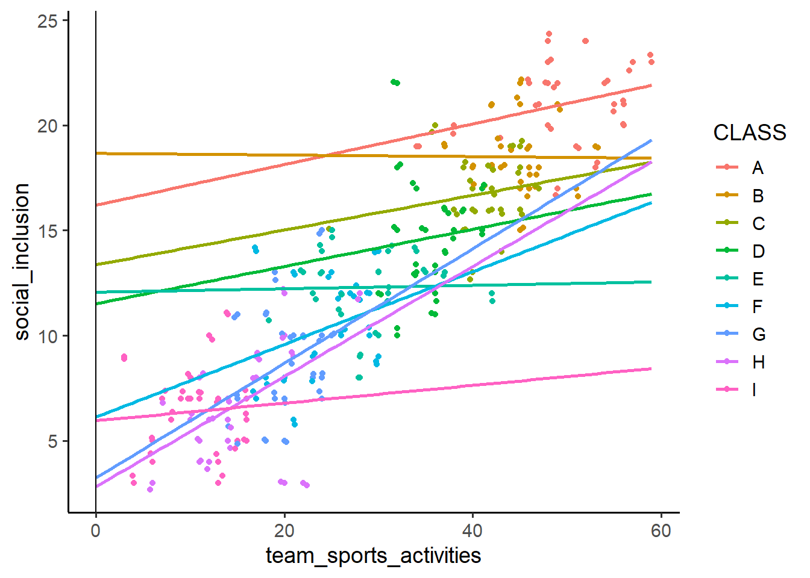

![]()

library(tidyverse) # https://www.tidyverse.org/
library(readxl) # https://readxl.tidyverse.org/ (Teil von tidyverse)
library(haven) # https://haven.tidyverse.org/ (Teil von tidyverse)
library(gt) # https://gt.rstudio.com/
library(ggside) # https://cran.r-project.org/web/packages/ggside/readme/README.html
library(see) # https://easystats.github.io/see/
library(correlation) # https://easystats.github.io/correlation/index.html
library(sjPlot) # https://strengejacke.github.io/sjPlot/
library(lme4) # https://cran.r-project.org/web/packages/lme4/index.htmlMotivation
Multilevel analysis has dramatically burst on the scene, and we now have the statistical tools to study phenomena at multiple levels. However, many researchers think that they cannot conduct such analyses because they are too complicated and they require specialized, expensive software. Fortunately, as this book shows, both of these beliefs are mistaken.
First, multilevel analysis is not all that complex, as conveyed in the subtitle of the book: “It’s Just Regression.” If the reader understands multiple regression, the fundamental statistical model in the social sciences, it is a relatively simple step to learn about multilevel analysis.
Series Editor’s Note (David A. Kenny)
Ablauf
Korrelation → Regression → Multilevel-Analysis (Multilevel-Regression)
Pakete
Korrelation
Datenquelle
Imuta K, Scarf D, Pharo H, Hayne H (2013) Drawing a Close to the Use of Human Figure Drawings as a Projective Measure of Intelligence. PLoS ONE 8(3): e58991.
- https://doi.org/10.1371/journal.pone.0058991 (Paper)
- https://doi.org/10.1371/journal.pone.0058991.s001 (Daten im Word-Format)
- https://github.com/PawelKulawiak/rworkshop/blob/main/DATA_doi_10.1371_journal.pone.0058991.xlsx (Daten im Excel-Format)
- https://github.com/PawelKulawiak/rworkshop/raw/refs/heads/main/DATA_doi_10.1371_journal.pone.0058991.xlsx (Direkter Download: Daten im Excel-Format)
Variablen:
- DAP_IQ: Draw-A-Person Intellectual Ability Test (Mann-Zeichen-Test)
- WPPSI: Wechsler Preschool and Primary Scale of Intelligence


DATA <-
read_xlsx("DATA_doi_10.1371_journal.pone.0058991.xlsx")
head(DATA) %>%
gt() %>%
tab_options(table.align = "left") %>%
tab_header("Die ersten 6 kinder des Datensatzes", "100 Kinder insgesamt")| Die ersten 6 kinder des Datensatzes | ||
| 100 Kinder insgesamt | ||
| Participant | DAP_IQ | WPPSI |
|---|---|---|
| 1 | 67 | 85 |
| 2 | 72 | 107 |
| 3 | 73 | 102 |
| 4 | 79 | 95 |
| 5 | 79 | 108 |
| 6 | 83 | 97 |
Visualisierung
Univariat und bivariat
Die dargestellten Abbildungen demonstrieren die univariate Visualisierung beider Verteilungen (separate Histogramme für DAP_IQ und WPPSI) und anschließend die Überführung der beiden univariaten Verteilungen in einen 2-dimensionalen Raum (2-dimensionale Ebene; x und y), also das bivariate Streudiagramm (scatter plot) der beiden Variablen (DAP_IQ und WPPSI).
DATA %>%
ggplot(aes(x = DAP_IQ, y = WPPSI)) +
geom_point(col = "blue") +
geom_point(aes(y = 0), col = "blue") +
geom_point(aes(x = 0), col = "blue") +
xlim(c(0, 150)) +
ylim(c(0, 140)) +
theme_classic(base_size = 12)
DATA %>%
ggplot(aes(x = DAP_IQ, y = WPPSI)) +
geom_point(col = "blue") +
#
#
xlim(c(0, 150)) +
ylim(c(0, 140)) +
theme_classic(base_size = 12)
DATA %>%
ggplot(aes(x = DAP_IQ, y = WPPSI)) +
geom_point(col = "blue") +
geom_point(aes(y = 0), col = "blue") +
geom_point(aes(x = 0), col = "blue") +
xlim(c(0, 150)) +
ylim(c(0, 140)) +
geom_xsidedensity(col = "blue", fill = "lightgray") +
geom_ysidedensity(col = "blue", fill = "lightgray") +
theme_classic(base_size = 12) +
theme(ggside.panel.scale.x = 0.2,
ggside.panel.scale.y = 0.2,
ggside.axis.text = element_blank(),
ggside.axis.ticks = element_blank(),
ggside.axis.line = element_blank()) 
DATA %>%
ggplot(aes(x = DAP_IQ, y = WPPSI)) +
geom_point(col = "blue") +
#
#
xlim(c(0, 150)) +
ylim(c(0, 140)) +
geom_xsidedensity(col = "blue", fill = "lightgray") +
geom_ysidedensity(col = "blue", fill = "lightgray") +
theme_classic(base_size = 12) +
theme(ggside.panel.scale.x = 0.2,
ggside.panel.scale.y = 0.2,
ggside.axis.text = element_blank(),
ggside.axis.ticks = element_blank(),
ggside.axis.line = element_blank()) 


DATA %>%
ggplot(aes(x = DAP_IQ, y = WPPSI)) +
geom_point(col = "blue") +
geom_xsidedensity(col = "blue", fill = "lightgray") +
geom_ysidedensity(col = "blue", fill = "lightgray") +
theme_classic(base_size = 12) +
theme(ggside.panel.scale.x = 0.2,
ggside.panel.scale.y = 0.2,
ggside.axis.text = element_blank(),
ggside.axis.ticks = element_blank(),
ggside.axis.line = element_blank()) 
Übung
Interpretieren und beschreiben Sie die unterschiedlichen Punktewolken.

Lösung
Produkt-Moment-Korrelation (r) [Bravais-Pearson correlation, Pearson correlation]
Nach Cohen (1988) kann r als Effektgröße des Zusammenhangs verwendet werden:
- |r| ≈ .1 «schwach»
- |r| ≈ .3 «mittel»
- |r| ≈ .5 «stark»
Quelle: https://dorsch.hogrefe.com/stichwort/produkt-moment-korrelation

Interaktives Tool
https://rpsychologist.com/correlation/
Anscombe’s quartet
Anscombe, F. J. (1973). Graphs in Statistical Analysis. The American Statistician, 27(1), 17–21. https://doi.org/10.1080/00031305.1973.10478966
Das Anscombe-Quartett besteht aus vier Mengen von Datenpunkten, die nahezu identische einfache statistische Eigenschaften haben, aber aufgetragen sehr verschieden aussehen. Jede dieser vier Mengen besteht aus elf (x,y)-Punkten. Diese vier Mengen wurden im Jahre 1973 von dem englischen Statistiker Francis Anscombe konstruiert, um die Bedeutung einer graphischen Datenanalyse herauszustellen und die Effekte von Ausreißern zu demonstrieren.

Übung
Replikation:
Visualisieren Sie den Zusammenhang zwischen DAP_IQ und WPPSI (Streudiagramm mit Histogrammen).
Übung mit neuen Daten:
Gibt es einen Zusammenhang zwischen Anzahl der Freunde in der Schule und Gefühlen der Einsamkeit in der Schule?
Visualisieren Sie den Zusammenhang (Streudiagramm mit Histogrammen).
Die Daten finden Sie im Paper:
Vyrastekova, J. (2021). Social inclusion of students with special educational needs assessed by the Inclusion of Other in the Self scale. PLOS ONE, 16(4), e0250070. https://doi.org/10.1371/journal.pone.0250070
Direkter Download der Daten:
https://doi.org/10.1371/journal.pone.0250070.s003
Direkter Import der Daten:
DATA <-
read_sav("https://doi.org/10.1371/journal.pone.0250070.s003")
Lösung
DATA %>%
ggplot(aes(x = FriendsAtSchool, y = LonelinessSchool)) +
geom_point(col = "blue") +
geom_xsidedensity(col = "blue", fill = "lightgray") +
geom_ysidedensity(col = "blue", fill = "lightgray") +
theme_classic(base_size = 12) +
theme(ggside.panel.scale.x = 0.2,
ggside.panel.scale.y = 0.2,
ggside.axis.text = element_blank(),
ggside.axis.ticks = element_blank(),
ggside.axis.line = element_blank()) 
Berechnung
cor.test(DATA$DAP_IQ, DATA$WPPSI, alternative = "greater")
Pearson's product-moment correlation
data: DATA$DAP_IQ and DATA$WPPSI
t = 3.1047, df = 98, p-value = 0.001245
alternative hypothesis: true correlation is greater than 0
95 percent confidence interval:
0.1407486 1.0000000
sample estimates:
cor
0.2992529 Parameter1 | Parameter2 | r | 95% CI | t(98) | p
---------------------------------------------------------------
DAP_IQ | WPPSI | 0.30 | [0.14, 1.00] | 3.10 | 0.001**
Observations: 100DATA %>%
cor_test("DAP_IQ", "WPPSI", alternative = "greater") %>%
gt() %>%
tab_options(table.align = "left") %>%
fmt_number(decimals = 3) %>%
tab_header("Correlation", "Draw-A-Person Intellectual Ability Test & Wechsler Preschool and Primary Scale of Intelligence")| Correlation | ||||||||||
| Draw-A-Person Intellectual Ability Test & Wechsler Preschool and Primary Scale of Intelligence | ||||||||||
| Parameter1 | Parameter2 | r | CI | CI_low | CI_high | t | df_error | p | Method | n_Obs |
|---|---|---|---|---|---|---|---|---|---|---|
| DAP_IQ | WPPSI | 0.299 | 0.950 | 0.141 | 1.000 | 3.105 | 98.000 | 0.001 | Pearson | 100.000 |
Übung
Berechnen und visualisieren Sie den Zusammenhang zwischen Anzahl der Freunde in der Schule und Gefühlen der Einsamkeit in der Schule.
In der Visualisierung soll der nummerische Wert der Korrelation dargestellt sein.
- Analyse mit gesamten Datensatz
- Analyse ohne Ausreißer (Ausreißer entfernen)
Lösung
DATA <-
read_sav("https://doi.org/10.1371/journal.pone.0250070.s003")
DATA %>%
cor_test("FriendsAtSchool", "LonelinessSchool") %>%
gt() %>%
tab_options(table.align = "left") %>%
fmt_number(decimals = 3)| Parameter1 | Parameter2 | r | CI | CI_low | CI_high | t | df_error | p | Method | n_Obs |
|---|---|---|---|---|---|---|---|---|---|---|
| FriendsAtSchool | LonelinessSchool | 0.159 | 0.950 | −0.017 | 0.326 | 1.788 | 123.000 | 0.076 | Pearson | 125.000 |

{kind=link}
{kind=link}
{kind=link}
{kind=link}
Punktbiseriale Korrelation
Parametrisches Verfahren zur Bestimmung des Ausmaßes des Zusammenhangs (Korrelation) zwischen einer intervallskalierten Variable und einer dichotomen Variable.
Die punktbiseriale Korrelation und der t-Test für unabhängige Stichproben sind insofern äquivalente Verfahren, als die Ergebnisse direkt ineinander überführt werden können und der p-Wert (Signifikanztest) für beide Verfahren identisch ist.
Quelle: https://dorsch.hogrefe.com/stichwort/punktbiseriale-korrelation
Code
DATA %>%
filter(FriendsAtSchool < 30) %>%
ggplot(aes(x = as_factor(h_psycho), y = FriendsAtSchool)) +
geom_boxplot(fill = "lightgray") +
geom_jitter(width = 0.1,
height = 0,
shape = 21,
alpha = 0.2,
size = 4,
fill = "blue") +
stat_summary(fun = mean,
geom = "line",
aes(group = "x"),
color = "blue",
linewidth = 1) +
theme_classic(base_size = 16)Code
DATA %>%
filter(FriendsAtSchool < 30) %>%
ggplot(aes(x = as_factor(h_psycho), y = FriendsAtSchool)) +
geom_violin(fill = "lightgray") +
geom_jitter(width = 0.1,
height = 0,
shape = 21,
alpha = 0.2,
size = 4,
fill = "blue") +
stat_summary(fun = mean,
geom = "line",
aes(group = "x"),
color = "blue",
linewidth = 1) +
theme_classic(base_size = 16)Korrelationsmatrix
Code

Code
Weiterführende Informationen
- https://openintro-ims.netlify.app/model-slr (Lehrbuch)
- https://moderndive.com/v2/regression.html (Lehrbuch)
- https://r-charts.com/correlation/
- https://r-graph-gallery.com/correlogram.html
- https://r-graph-gallery.com/scatterplot.html
- https://easystats.github.io/correlation/
- https://easystats.github.io/see/
- https://corrr.tidymodels.org/
Regression
Visualisierung
DATA <-
read_xlsx("DATA_doi_10.1371_journal.pone.0058991.xlsx")
DATA %>%
ggplot(aes(x = DAP_IQ, y = WPPSI)) +
geom_point() +
geom_smooth() + # glatt (LOESS: locally estimated scatterplot smoothing)
theme_classic()DATA %>%
ggplot(aes(x = DAP_IQ, y = WPPSI)) +
geom_point() +
geom_smooth(se = FALSE) +
theme_classic()DATA %>%
ggplot(aes(x = DAP_IQ, y = WPPSI)) +
geom_point() +
geom_smooth(method = "lm", se = FALSE) +
theme_classic()DATA %>%
ggplot(aes(x = DAP_IQ, y = WPPSI)) +
geom_point() +
geom_smooth(method = "lm", se = FALSE) +
xlim(c(0, 150)) +
ylim(c(0, 140)) +
theme_classic()DATA %>%
ggplot(aes(x = DAP_IQ, y = WPPSI)) +
geom_point() +
geom_smooth(method = "lm", se = FALSE, fullrange = TRUE) +
xlim(c(0, 150)) +
ylim(c(0, 140)) +
theme_classic()
Berechnung
- https://de.wikipedia.org/wiki/Lineare_Regression
- https://www.theanalysisfactor.com/the-many-names-of-independent-variables/
y = b0 + b1x1
y = n + mx
f(x) = n + mx
y = intercept + x
y = x
AV = UV
Outcome = Prädiktor
Outcome ~ Prädiktor
y ~ x
lm(WPPSI ~ DAP_IQ, data = DATA)
Call:
lm(formula = WPPSI ~ DAP_IQ, data = DATA)
Coefficients:
(Intercept) DAP_IQ
79.3935 0.2339 y = n + mx
f(x) = n + mx
y = intercept + x
y = 79.39 + 0.23x
WPPSI = 79.39 + 0.23*DAP_IQ
Call:
lm(formula = WPPSI ~ DAP_IQ, data = DATA)
Residuals:
Min 1Q Median 3Q Max
-33.230 -8.183 0.770 8.541 21.852
Coefficients:
Estimate Std. Error t value Pr(>|t|)
(Intercept) 79.39348 8.10331 9.798 3.33e-16 ***
DAP_IQ 0.23392 0.07534 3.105 0.00249 **
---
Signif. codes: 0 '***' 0.001 '**' 0.01 '*' 0.05 '.' 0.1 ' ' 1
Residual standard error: 10.98 on 98 degrees of freedom
Multiple R-squared: 0.08955, Adjusted R-squared: 0.08026
F-statistic: 9.639 on 1 and 98 DF, p-value: 0.00249| WPPSI | |||
|---|---|---|---|
| Predictors | Estimates | CI | p |
| (Intercept) | 79.39 | 63.31 – 95.47 | <0.001 |
| DAP IQ | 0.23 | 0.08 – 0.38 | 0.002 |
| Observations | 100 | ||
| R2 / R2 adjusted | 0.090 / 0.080 | ||
Übung
Interpretieren Sie die folgenden Parameter der Regressionsanalyse unter Berücksichtigung der Visualisierung (Streudiagramm mit Regressionsgerade):
- Intercept
- Regressionskoeffizient für DAP_IQ
- R2
Code
DATA %>%
ggplot(aes(x = DAP_IQ, y = WPPSI)) +
geom_point() +
geom_smooth(method = "lm", se = FALSE, fullrange = TRUE) +
xlim(c(0, 150)) +
ylim(c(0, 140)) +
theme_classic()
Übung
Rechnen Sie 2 separate Regressionsmodelle und visualisieren Sie die Zusammenhänge mit Regressionsgeraden.
Regressionsmodell A: Gibt es einen Zusammenhang zwischen Anzahl der Freunde in der Schule und Gefühlen der Einsamkeit in der Schule?
Regressionsmodell B: Gibt es einen Zusammenhang zwischen psychischer Auffälligkeit und Gefühlen der Einsamkeit in der Schule?
Ausreißer bitte vor den Analysen entfernen (!):
Lösung
Code
DATA %>%
ggplot(aes(x = FriendsAtSchool, y = LonelinessSchool)) +
geom_point() +
geom_smooth(method = "lm", se = FALSE, fullrange = TRUE) +
theme_classic()Code
DATA %>%
ggplot(aes(x = h_psycho, y = LonelinessSchool)) +
geom_point() +
geom_smooth(method = "lm", se = FALSE, fullrange = TRUE) +
theme_classic()
Code
DATA %>%
ggplot(aes(x = as_factor(h_psycho), y = LonelinessSchool)) +
geom_violin(fill = "lightgray") +
geom_jitter(width = 0.1,
height = 0,
shape = 21,
alpha = 0.2,
size = 4,
fill = "blue") +
stat_summary(fun = mean,
geom = "line",
aes(group = "x"),
color = "blue",
linewidth = 1) +
theme_classic()Multiple Regression (mit Interaktionseffekt)
| LonelinessSchool | |||
|---|---|---|---|
| Predictors | Estimates | CI | p |
| (Intercept) | 9.11 | 8.18 – 10.04 | <0.001 |
| Female | 0.45 | -1.00 – 1.89 | 0.542 |
| FriendsAtSchool | 0.59 | 0.21 – 0.97 | 0.003 |
| Female × FriendsAtSchool | -0.28 | -0.74 – 0.17 | 0.221 |
| Observations | 124 | ||
| R2 / R2 adjusted | 0.114 / 0.092 | ||
| LonelinessSchool | |||
|---|---|---|---|
| Predictors | Estimates | CI | p |
| (Intercept) | 9.11 | 8.18 – 10.04 | <0.001 |
| Female | 0.45 | -1.00 – 1.89 | 0.542 |
| FriendsAtSchool | 0.59 | 0.21 – 0.97 | 0.003 |
| Female × FriendsAtSchool | -0.28 | -0.74 – 0.17 | 0.221 |
| Observations | 124 | ||
| R2 / R2 adjusted | 0.114 / 0.092 | ||
Code
DATA %>%
filter(FriendsAtSchool < 30) %>%
ggplot(aes(x = FriendsAtSchool, y = LonelinessSchool, color = as_factor(Female))) +
geom_point() +
geom_smooth(method = "lm", se = FALSE) +
theme_classic()
Übung
Rechnen Sie Regressionsmodelle mit Interaktionen:
Regressionsmodell A: Vorhersage von Gefühlen der Einsamkeit in der Schule anhand psychischer Auffälligkeit und Anzahl der Freunde in der Schule.
Regressionsmodell B: Vorhersage von Gefühlen der Einsamkeit in der Schule anhand motorischer Auffälligkeit und Anzahl der Freunde in der Schule.
Ausreißer bitte vor den Analysen entfernen (!):
Lösung
| LonelinessSchool | |||
|---|---|---|---|
| Predictors | Estimates | CI | p |
| (Intercept) | 9.81 | 8.94 – 10.69 | <0.001 |
| h_psycho | -1.14 | -2.56 – 0.29 | 0.116 |
| FriendsAtSchool | 0.30 | 0.07 – 0.54 | 0.013 |
| h_psycho:FriendsAtSchool | 0.28 | -0.21 – 0.77 | 0.256 |
| Observations | 124 | ||
| R2 / R2 adjusted | 0.122 / 0.100 | ||
Code
DATA %>%
filter(FriendsAtSchool < 30) %>%
ggplot(aes(x = FriendsAtSchool, y = LonelinessSchool, color = as_factor(h_psycho))) +
geom_point() +
geom_smooth(method = "lm", se = FALSE) +
theme_classic()| LonelinessSchool | |||
|---|---|---|---|
| Predictors | Estimates | CI | p |
| (Intercept) | 9.20 | 8.42 – 9.99 | <0.001 |
| h_motor | 0.99 | -0.68 – 2.67 | 0.244 |
| FriendsAtSchool | 0.37 | 0.12 – 0.62 | 0.004 |
| h_motor:FriendsAtSchool | 0.00 | -0.43 – 0.44 | 0.986 |
| Observations | 124 | ||
| R2 / R2 adjusted | 0.119 / 0.097 | ||
Code
DATA %>%
filter(FriendsAtSchool < 30) %>%
ggplot(aes(x = FriendsAtSchool, y = LonelinessSchool, color = as_factor(h_motor))) +
geom_point() +
geom_smooth(method = "lm", se = FALSE) +
theme_classic()
Weiterführende Informationen
- https://openintro-ims.netlify.app/model-slr (Lehrbuch)
- https://openintro-ims.netlify.app/model-mlr (Lehrbuch)
- https://moderndive.com/v2/regression.html (Lehrbuch)
- https://moderndive.com/v2/multiple-regression.html (Lehrbuch)
Multilevel-Regression
https://www.theanalysisfactor.com/many-names-multilevel-models/
Hierarchische Lineare Modellierung
Gemischte lineare Regression
Multilevel-Analyse
Multilevel model
hierarchical linear model
linear mixed-effect model
mixed model
nested data model
random coefficient model
random-effects model
random parameter model
Fixed and random effects model
It’s Just Regression
DATA <- read_excel("simulated_multi_level_data_ri.xlsx")
DATA %>%
select(id, social_inclusion, team_sports_activities) %>%
head() %>%
gt() %>%
tab_options(table.align = "left") %>%
tab_header("Die ersten 6 kinder des Datensatzes", "360 Kinder insgesamt")| Die ersten 6 kinder des Datensatzes | ||
| 360 Kinder insgesamt | ||
| id | social_inclusion | team_sports_activities |
|---|---|---|
| 1 | 24 | 52 |
| 2 | 23 | 48 |
| 3 | 22 | 49 |
| 4 | 24 | 48 |
| 5 | 17 | 49 |
| 6 | 22 | 54 |
DATA %>%
ggplot(aes(x = team_sports_activities, y = social_inclusion)) +
geom_point() +
geom_smooth(method = "lm", se = FALSE) +
theme_classic()
Mehrebenen-Datenstruktur (nested data, clustered data)
Mixed Effects Model: Random Intercept Model
DATA %>%
ggplot(aes(x = team_sports_activities, y = social_inclusion)) + ###########
geom_point() +
#
geom_smooth(method = "lm", se = FALSE) +
theme_classic(base_size = 14)
| social_inclusion | |||
|---|---|---|---|
| Predictors | Estimates | CI | p |
| (Intercept) | 2.24 | 1.35 – 3.13 | <0.001 |
| team sports activities | 0.35 | 0.33 – 0.38 | <0.001 |
| Observations | 180 | ||
| R2 / R2 adjusted | 0.789 / 0.787 | ||
DATA %>%
ggplot(aes(x = team_sports_activities, y = social_inclusion, color = CLASS)) +
geom_point() +
geom_jitter() +
geom_smooth(method = "lm", se = FALSE) +
theme_classic(base_size = 14)| social_inclusion | |||
|---|---|---|---|
| Predictors | Estimates | CI | p |
| (Intercept) | 8.10 | 5.25 – 10.96 | <0.001 |
| team sports activities | 0.16 | 0.09 – 0.22 | <0.001 |
| Random Effects | |||
| σ2 | 4.92 | ||
| τ00CLASS | 9.58 | ||
| ICC | 0.66 | ||
| N CLASS | 9 | ||
| Observations | 180 | ||
| Marginal R2 / Conditional R2 | 0.241 / 0.743 | ||
In einer durchschnittlichen Klasse: Wenn team_sports_activities = 0, dann erwarten wir eine social_inclusion von 8.10
DATA %>%
ggplot(aes(x = team_sports_activities, y = social_inclusion, color = CLASS)) +
geom_point() +
geom_jitter() +
geom_smooth(method = "lm", se = FALSE) +
theme_classic(base_size = 14)| social_inclusion | |||
|---|---|---|---|
| Predictors | Estimates | CI | p |
| (Intercept) | 8.10 | 5.25 – 10.96 | <0.001 |
| team sports activities | 0.16 | 0.09 – 0.22 | <0.001 |
| Random Effects | |||
| σ2 | 4.92 | ||
| τ00CLASS | 9.58 | ||
| ICC | 0.66 | ||
| N CLASS | 9 | ||
| Observations | 180 | ||
| Marginal R2 / Conditional R2 | 0.241 / 0.743 | ||
In einer durchschnittlichen Klasse: Wenn team_sports_activities = 0, dann erwarten wir eine social_inclusion von 8.10
DATA %>%
ggplot(aes(x = team_sports_activities %>% scale(scale = F), y = social_inclusion, color = CLASS)) +
geom_point() +
geom_jitter() +
geom_smooth(method = "lm", se = FALSE) +
theme_classic(base_size = 14)lmer(social_inclusion ~ team_sports_activities %>% scale(scale = F) + (1 | CLASS), data = DATA) %>%
tab_model()| social_inclusion | |||
|---|---|---|---|
| Predictors | Estimates | CI | p |
| (Intercept) | 12.83 | 10.77 – 14.90 | <0.001 |
| team sports activities %>% scale(scale = F) |
0.16 | 0.09 – 0.22 | <0.001 |
| Random Effects | |||
| σ2 | 4.92 | ||
| τ00CLASS | 9.58 | ||
| ICC | 0.66 | ||
| N CLASS | 9 | ||
| Observations | 180 | ||
| Marginal R2 / Conditional R2 | 0.241 / 0.743 | ||
In einer durchschnittlichen Klasse: Wenn team_sports_activities durchschnittlich ist (= 0), dann erwarten wir eine social_inclusion von 12.83
DATA %>%
ggplot(aes(x = team_sports_activities, y = social_inclusion, color = CLASS)) +
geom_point() +
geom_jitter() +
geom_smooth(method = "lm", se = FALSE, fullrange = T) +
geom_vline(xintercept = 0) +
theme_classic(base_size = 14)| social_inclusion | |||
|---|---|---|---|
| Predictors | Estimates | CI | p |
| (Intercept) | 8.10 | 5.25 – 10.96 | <0.001 |
| team sports activities | 0.16 | 0.09 – 0.22 | <0.001 |
| Random Effects | |||
| σ2 | 4.92 | ||
| τ00CLASS | 9.58 | ||
| ICC | 0.66 | ||
| N CLASS | 9 | ||
| Observations | 180 | ||
| Marginal R2 / Conditional R2 | 0.241 / 0.743 | ||
In einer durchschnittlichen Klasse: Wenn team_sports_activities = 0, dann erwarten wir eine social_inclusion von 8.10
DATA %>%
ggplot(aes(x = team_sports_activities %>% scale(scale = F), y = social_inclusion, color = CLASS)) +
geom_point() +
geom_jitter() +
geom_smooth(method = "lm", se = FALSE, fullrange = T) +
geom_vline(xintercept = 0) +
theme_classic(base_size = 14)
lmer(social_inclusion ~ team_sports_activities %>% scale(scale = F) + (1 | CLASS), data = DATA) %>%
tab_model()| social_inclusion | |||
|---|---|---|---|
| Predictors | Estimates | CI | p |
| (Intercept) | 12.83 | 10.77 – 14.90 | <0.001 |
| team sports activities %>% scale(scale = F) |
0.16 | 0.09 – 0.22 | <0.001 |
| Random Effects | |||
| σ2 | 4.92 | ||
| τ00CLASS | 9.58 | ||
| ICC | 0.66 | ||
| N CLASS | 9 | ||
| Observations | 180 | ||
| Marginal R2 / Conditional R2 | 0.241 / 0.743 | ||
In einer durchschnittlichen Klasse: Wenn team_sports_activities durchschnittlich ist (= 0), dann erwarten wir eine social_inclusion von 12.83
Centering at the Grand Mean (CGM), Centering Within Cluster (CWC) & Cross-Level Interactions
DATA <-
DATA %>%
group_by(CLASS) %>%
mutate(team_sports_activities_cwc = team_sports_activities - mean(team_sports_activities, na.rm = TRUE)) %>%
ungroup()
DATA %>%
ggplot(aes(x = team_sports_activities_cwc, y = social_inclusion, color = CLASS)) +
geom_point() +
geom_jitter() +
geom_smooth(method = "lm", se = FALSE, fullrange = T) +
geom_vline(xintercept = 0) +
theme_classic(base_size = 14)| social_inclusion | |||
|---|---|---|---|
| Predictors | Estimates | CI | p |
| (Intercept) | 12.83 | 9.40 – 16.27 | <0.001 |
| team sports activities cwc |
0.11 | 0.04 – 0.18 | 0.002 |
| Random Effects | |||
| σ2 | 4.88 | ||
| τ00CLASS | 27.07 | ||
| ICC | 0.85 | ||
| N CLASS | 9 | ||
| Observations | 180 | ||
| Marginal R2 / Conditional R2 | 0.008 / 0.848 | ||

Literatur
- https://www.learn-mlms.com/08-module-8.html#module-8 (Lehrbuch)
- Enders, C. K., & Tofighi, D. (2007). Centering predictor variables in cross-sectional multilevel models: A new look at an old issue. Psychological Methods, 12(2), 121–138. https://psycnet.apa.org/doi/10.1037/1082-989X.12.2.121
- Aguinis, H., Gottfredson, R. K., & Culpepper, S. A. (2013). Best-Practice Recommendations for Estimating Cross-Level Interaction Effects Using Multilevel Modeling. Journal of Management, 39(6), 1490–1528. https://doi.org/10.1177/0149206313478188
Übung: Random Intercept Model
Berechnen und visualisieren Sie den Zusammenhang zwischen Sport und sozialer Inklusion unter Berücksichtigung der genesteten Datenstruktur (Kinder in Schulklassen).
Daten:
Mixed Effects Model: Random Slope and Intercept Model
Lehrbücher / Ausblick
Oben Pakete automatisch installieren.
R Session Info
─ Session info ───────────────────────────────────────────────────────────────
setting value
version R version 4.5.0 (2025-04-11 ucrt)
os Windows 11 x64 (build 26100)
system x86_64, mingw32
ui RTerm
language (EN)
collate German_Germany.utf8
ctype German_Germany.utf8
tz Europe/Berlin
date 2025-06-30
pandoc 3.4 @ C:/Program Files/RStudio/resources/app/bin/quarto/bin/tools/ (via rmarkdown)
quarto NA @ C:\\PROGRA~1\\RStudio\\RESOUR~1\\app\\bin\\quarto\\bin\\quarto.exe
─ Packages ───────────────────────────────────────────────────────────────────
package * version date (UTC) lib source
bayestestR 0.16.0 2025-05-20 [1] CRAN (R 4.5.0)
boot 1.3-31 2024-08-28 [2] CRAN (R 4.5.0)
cachem 1.1.0 2024-05-16 [1] CRAN (R 4.5.0)
cellranger 1.1.0 2016-07-27 [1] CRAN (R 4.5.0)
cli 3.6.5 2025-04-23 [1] CRAN (R 4.5.0)
correlation * 0.8.7 2025-03-03 [1] CRAN (R 4.5.0)
curl 6.2.2 2025-03-24 [1] CRAN (R 4.5.0)
datawizard 1.1.0 2025-05-09 [1] CRAN (R 4.5.0)
devtools * 2.4.5 2022-10-11 [1] CRAN (R 4.5.0)
digest 0.6.37 2024-08-19 [1] CRAN (R 4.5.0)
dplyr * 1.1.4 2023-11-17 [1] CRAN (R 4.5.0)
effectsize 1.0.0 2024-12-10 [1] CRAN (R 4.5.0)
ellipsis 0.3.2 2021-04-29 [1] CRAN (R 4.5.0)
evaluate 1.0.3 2025-01-10 [1] CRAN (R 4.5.0)
farver 2.1.2 2024-05-13 [1] CRAN (R 4.5.0)
fastmap 1.2.0 2024-05-15 [1] CRAN (R 4.5.0)
faux * 1.2.2 2025-01-15 [1] CRAN (R 4.5.0)
forcats * 1.0.0 2023-01-29 [1] CRAN (R 4.5.0)
fs 1.6.6 2025-04-12 [1] CRAN (R 4.5.0)
generics 0.1.4 2025-05-09 [1] CRAN (R 4.5.0)
GGally * 2.2.1 2024-02-14 [1] CRAN (R 4.5.0)
ggeffects 2.2.1 2025-03-11 [1] CRAN (R 4.5.0)
ggplot2 * 3.5.2 2025-04-09 [1] CRAN (R 4.5.0)
ggside * 0.3.1 2024-03-01 [1] CRAN (R 4.5.0)
ggstats 0.9.0 2025-03-10 [1] CRAN (R 4.5.0)
glue 1.8.0 2024-09-30 [1] CRAN (R 4.5.0)
gt * 1.0.0 2025-04-05 [1] CRAN (R 4.5.0)
gtable 0.3.6 2024-10-25 [1] CRAN (R 4.5.0)
haven * 2.5.4 2023-11-30 [1] CRAN (R 4.5.0)
hms 1.1.3 2023-03-21 [1] CRAN (R 4.5.0)
htmltools 0.5.8.1 2024-04-04 [1] CRAN (R 4.5.0)
htmlwidgets 1.6.4 2023-12-06 [1] CRAN (R 4.5.0)
httpuv 1.6.16 2025-04-16 [1] CRAN (R 4.5.0)
insight 1.3.0 2025-05-20 [1] CRAN (R 4.5.0)
jsonlite 2.0.0 2025-03-27 [1] CRAN (R 4.5.0)
knitr 1.50 2025-03-16 [1] CRAN (R 4.5.0)
labeling 0.4.3 2023-08-29 [1] CRAN (R 4.5.0)
later 1.4.2 2025-04-08 [1] CRAN (R 4.5.0)
lattice 0.22-6 2024-03-20 [2] CRAN (R 4.5.0)
lifecycle 1.0.4 2023-11-07 [1] CRAN (R 4.5.0)
lme4 * 1.1-37 2025-03-26 [1] CRAN (R 4.5.0)
lubridate * 1.9.4 2024-12-08 [1] CRAN (R 4.5.0)
magrittr 2.0.3 2022-03-30 [1] CRAN (R 4.5.0)
MASS 7.3-65 2025-02-28 [2] CRAN (R 4.5.0)
Matrix * 1.7-3 2025-03-11 [2] CRAN (R 4.5.0)
memoise 2.0.1 2021-11-26 [1] CRAN (R 4.5.0)
mgcv 1.9-1 2023-12-21 [2] CRAN (R 4.5.0)
mime 0.13 2025-03-17 [1] CRAN (R 4.5.0)
miniUI 0.1.2 2025-04-17 [1] CRAN (R 4.5.0)
minqa 1.2.8 2024-08-17 [1] CRAN (R 4.5.0)
nlme 3.1-168 2025-03-31 [2] CRAN (R 4.5.0)
nloptr 2.2.1 2025-03-17 [1] CRAN (R 4.5.0)
parameters 0.26.0 2025-05-22 [1] CRAN (R 4.5.0)
patchwork * 1.3.0 2024-09-16 [1] CRAN (R 4.5.0)
performance 0.14.0 2025-05-22 [1] CRAN (R 4.5.0)
pillar 1.10.2 2025-04-05 [1] CRAN (R 4.5.0)
pkgbuild 1.4.7 2025-03-24 [1] CRAN (R 4.5.0)
pkgconfig 2.0.3 2019-09-22 [1] CRAN (R 4.5.0)
pkgload 1.4.0 2024-06-28 [1] CRAN (R 4.5.0)
plyr 1.8.9 2023-10-02 [1] CRAN (R 4.5.0)
profvis 0.4.0 2024-09-20 [1] CRAN (R 4.5.0)
promises 1.3.2 2024-11-28 [1] CRAN (R 4.5.0)
purrr * 1.0.4 2025-02-05 [1] CRAN (R 4.5.0)
R6 2.6.1 2025-02-15 [1] CRAN (R 4.5.0)
rbibutils 2.3 2024-10-04 [1] CRAN (R 4.5.0)
RColorBrewer 1.1-3 2022-04-03 [1] CRAN (R 4.5.0)
Rcpp 1.0.14 2025-01-12 [1] CRAN (R 4.5.0)
Rdpack 2.6.4 2025-04-09 [1] CRAN (R 4.5.0)
readr * 2.1.5 2024-01-10 [1] CRAN (R 4.5.0)
readxl * 1.4.5 2025-03-07 [1] CRAN (R 4.5.0)
reformulas 0.4.1 2025-04-30 [1] CRAN (R 4.5.0)
remotes 2.5.0 2024-03-17 [1] CRAN (R 4.5.0)
rlang 1.1.6 2025-04-11 [1] CRAN (R 4.5.0)
rmarkdown 2.29 2024-11-04 [1] CRAN (R 4.5.0)
rstudioapi 0.17.1 2024-10-22 [1] CRAN (R 4.5.0)
sass 0.4.10 2025-04-11 [1] CRAN (R 4.5.0)
scales 1.4.0 2025-04-24 [1] CRAN (R 4.5.0)
see * 0.11.0 2025-03-11 [1] CRAN (R 4.5.0)
sessioninfo 1.2.3 2025-02-05 [1] CRAN (R 4.5.0)
shiny 1.10.0 2024-12-14 [1] CRAN (R 4.5.0)
sjlabelled 1.2.0 2022-04-10 [1] CRAN (R 4.5.0)
sjmisc 2.8.10 2024-05-13 [1] CRAN (R 4.5.0)
sjPlot * 2.8.17 2024-11-29 [1] CRAN (R 4.5.0)
sjstats 0.19.0 2024-05-14 [1] CRAN (R 4.5.0)
stringi 1.8.7 2025-03-27 [1] CRAN (R 4.5.0)
stringr * 1.5.1 2023-11-14 [1] CRAN (R 4.5.0)
tibble * 3.2.1 2023-03-20 [1] CRAN (R 4.5.0)
tidyr * 1.3.1 2024-01-24 [1] CRAN (R 4.5.0)
tidyselect 1.2.1 2024-03-11 [1] CRAN (R 4.5.0)
tidyverse * 2.0.0 2023-02-22 [1] CRAN (R 4.5.0)
timechange 0.3.0 2024-01-18 [1] CRAN (R 4.5.0)
tzdb 0.5.0 2025-03-15 [1] CRAN (R 4.5.0)
urlchecker 1.0.1 2021-11-30 [1] CRAN (R 4.5.0)
usethis * 3.1.0 2024-11-26 [1] CRAN (R 4.5.0)
vctrs 0.6.5 2023-12-01 [1] CRAN (R 4.5.0)
withr 3.0.2 2024-10-28 [1] CRAN (R 4.5.0)
xfun 0.52 2025-04-02 [1] CRAN (R 4.5.0)
xml2 1.3.8 2025-03-14 [1] CRAN (R 4.5.0)
xtable 1.8-4 2019-04-21 [1] CRAN (R 4.5.0)
yaml 2.3.10 2024-07-26 [1] CRAN (R 4.5.0)
[1] C:/Users/Graduiertenschule/AppData/Local/R/win-library/4.5
[2] C:/Program Files/R/R-4.5.0/library
* ── Packages attached to the search path.
──────────────────────────────────────────────────────────────────────────────